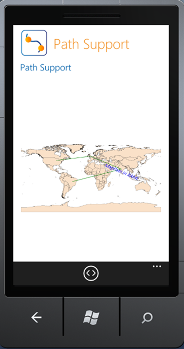
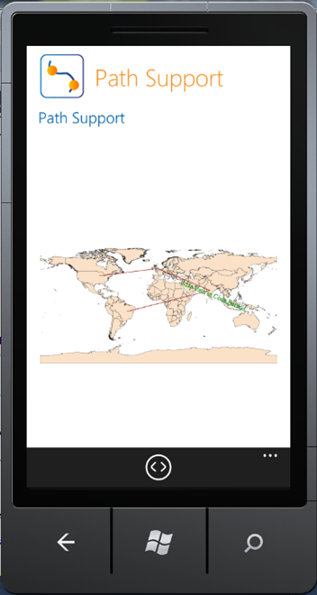

You can also customize the path style as given in the following code:
|
[XAML] <maps:MapPath PathLabelFontSize="14" PathLabelFontFamily="TimesNewRoman" LabelPoint="78,20" PathLabelFontStyle="Italic" PathColor="Green" PathLabelForeground="Blue"> |

Figure 30: Customized Path
|
[C#] path.PathLabel = "Map Path in Code Behind"; path.PathLabelPosition = PathLabelPosition.OnMiddlePoint; path.PathColor = new SolidColorBrush(Colors.Brown); path.PathLabelForeground = new SolidColorBrush(Colors.Green);
path.LabelPoint = new Point { X = 78, Y = 20 };
|

Figure 31: Customized Path